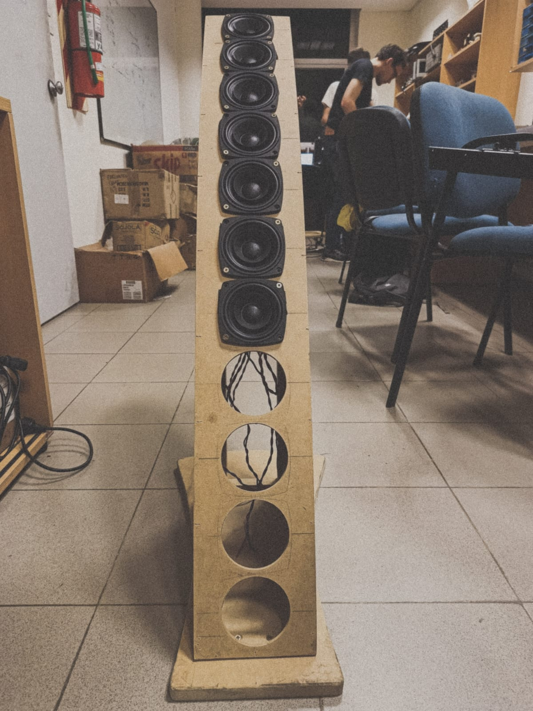

En el presente trabajo se diseña y caracteriza un transductor de ancho de haz constante (Constant Beamwidth Transducer - CBT), un arreglo de altoparlantes que controla el patrón de direccionalidad para un ángulo de cobertura específico.
Se realiza una investigación profunda para comprender su comportamiento acústico y se simula en VituixCAD2 el desempeño de un sistema de 22 altoparlantes con un ángulo de cobertura de 30º. El prototipo físico se construye empleando 11 altoparlantes, aprovechando el suelo como superficie reflectante para simular la sección faltante mediante el fenómeno de la fuente espejo. Finalmente, se mide la direccionalidad vertical utilizando el software ARTA y se procesan los datos mediante el desarrollo de código propio.
